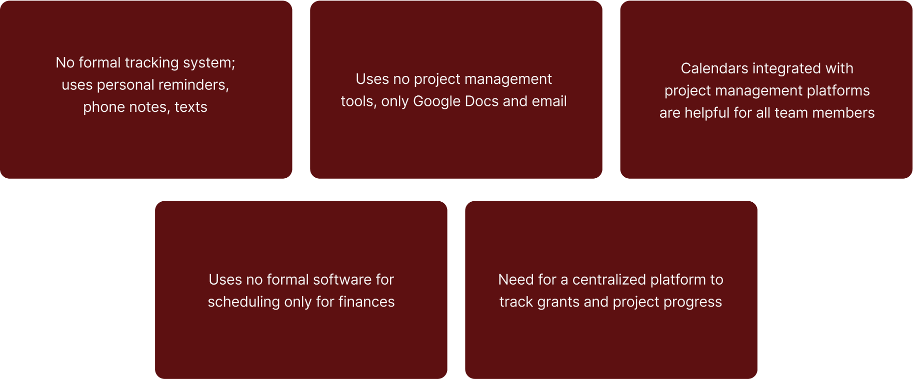
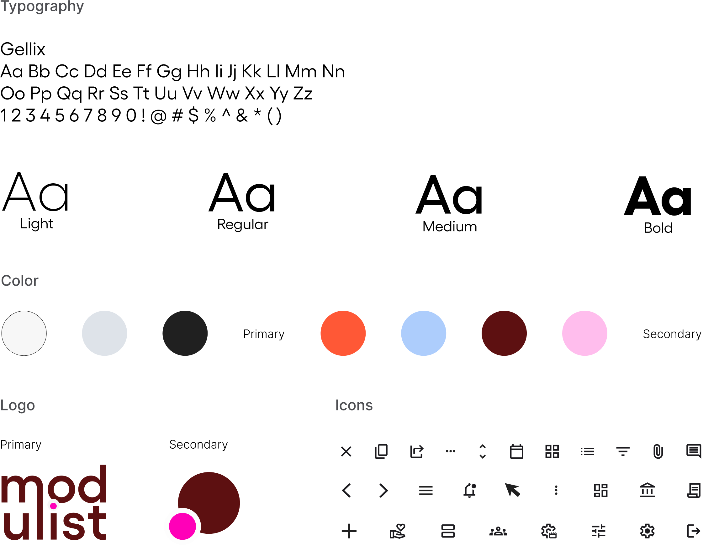

A comprehensive dashboard for nonprofits that streamlines task management, financial tracking, grant management, and event coordination.
(Student project)
UX Design
Branding
UI Design
Testing
1 month
*Working on a part-time
20hr/week schedule
Nonprofits demand a level of attention to detail, unlike many other roles. The number of moving parts required to keep everything running smoothly is vast—finances, grants, daily operations, outreach, volunteers, and more. All of these must seamlessly come together to create a successful and well-functioning organization.
After speaking with people involved in non profit, the problem was clear: Nonprofit staff and managers experience inefficiencies due to fragmented task management, financial tracking, and event coordination, resulting in a lack of organization. Additionally, the people I spoke with were resistant to change, firmly believing their established routines were the most efficient.
For the research portion of this project, it was imperative I spoke with users who were involved in nonprofit work themselves. Finding participants that had this connection proved difficult. I took to social forums, like Reddit, to scout participants but was kicked out of threads. I reached out to my DesignLab peers, but nobody had experience working with non profits. So, I turned to my inner circle.
In my competitive analysis, I looked at companies specializing in project management and found that, while their products were effective for general management, they didn’t fully address the unique needs of nonprofits.
I spoke with 3 users who were currently involved or previously involved with nonprofits, ranging from volunteers to VPs. Since I was only able to speak with 3 users, I recognized the importance of compensating for the limited sample size thorough secondary research.
I centered my secondary research on gathering firsthand experiences from nonprofit employees, exploring topics such as workflow, financial management, platform recommendations, organizational strategies, as well as volunteer and grant management.
3 Participants / 1 Man, 2 Women & lots of secondary research / Ages 25-67
The findings highlight a clear need for a centralized project management platform specifically designed for nonprofits to effectively manage projects, grants, and team coordination.
Important findings from my affinity map
After completing my research, I developed two personas: Marsha, a seasoned nonprofit employee resistant to change, and Scott, a newcomer eager to streamline operations. Their distinct needs guided my design choices; Marsha’s preference for simplicity and Scott’s focus on efficiency led me to add a volunteer connection feature and a centralized dashboard to display key information, addressing the priorities both personas emphasized in interviews.
To better understand my users, I developed a customer journey map that illustrates the progression from a potential customer to a loyal one. This map enabled me to consider the expectations organizations must meet to foster customer loyalty.
By crafting personas, the customer journey, and analyzing my research data, my goal was to address the issues posed by this question:
To tackle the “How Might We” question, I created user flows for adding tasks, checking grant statuses, and creating events. These flows address the key issues identified in user interviews and insights gleaned from secondary research.
I envisioned a dashboard that centralized all these features for easy viewing, so my initial iterations focused on arranging elements on a page to help me visualize their layout and functionality.
Before settling on a layout, I knew I needed to get the preliminary designs in front of a few people. Some great suggestions were made.
I aimed to use color creatively in this project to energize the dashboard and distinguish important sections, adding some fun to an otherwise mundane platform. To maintain a clean aesthetic, I chose a single sans-serif font for consistency, and ensured all elements had rounded corners and a minimalistic design.
After gathering user feedback on the functionality of my design, I moved on to creating refined versions that better aligned with user needs while seamlessly integrating the branding.
I reorganized the dashboard layout to prioritize the calendar and tasks—two essential aspects of nonprofit organization that can be overlooked without an effective organizational platform.
As the grant lifecycle progresses, users can easily click and drag grant cards between status markers, from "Not Started" to "Approved." Once approved, the grant history is stored within the platform, allowing users to access it whenever needed.
In Modulist, adding a task is completed through a pop-up window, providing a streamlined way to enter all the necessary task information on a single screen.
The next step in the process involved re-testing the updated designs. Feedback was overwhelmingly positive, with only one minor yet impactful change made to the event creation pop-up: the addition of an "event type" field to customize the experience based on the selected event.
To guide the evaluation, I asked participants about the clarity and layout of the dashboard, the usability of key input areas like "Add Task," "Grants," and "Add Event," and whether the overall interface made sense to them. These insights helped validate the design decisions and identify any remaining friction points.
Since some participants did not work for nonprofits, I also asked, “Would you use this platform if you worked for a nonprofit?” Their responses are detailed below.
Once the feedback from the user testing was received, I went back to the wireframes and added their suggestions.
One user emphasized the importance of including an option to select an event type, and upon reflecting on its purpose, I agreed. This feature would allow the page content and available fields to adjust according to the selected event type.
In the future, this platform can add advanced features for in-depth data analytics and predictive insights. These features could use historical data to forecast future outcomes, such as predicting budget overruns or identifying projects at risk of falling behind schedule. Additionally, the platform could include budget tracking, expense forecasting, and analysis of financial performance over time.